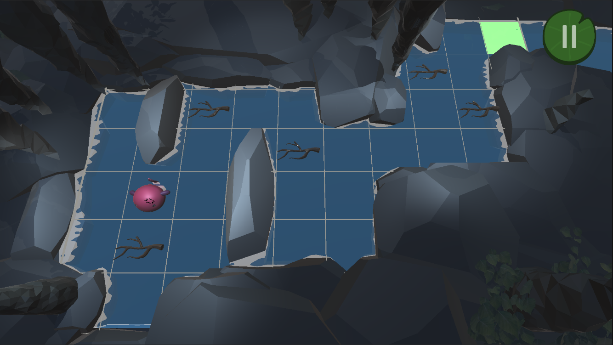
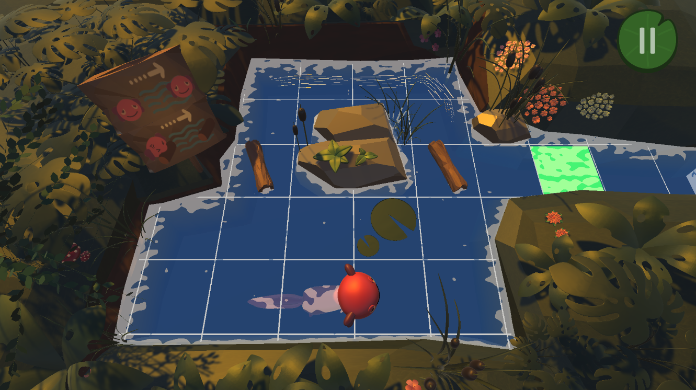
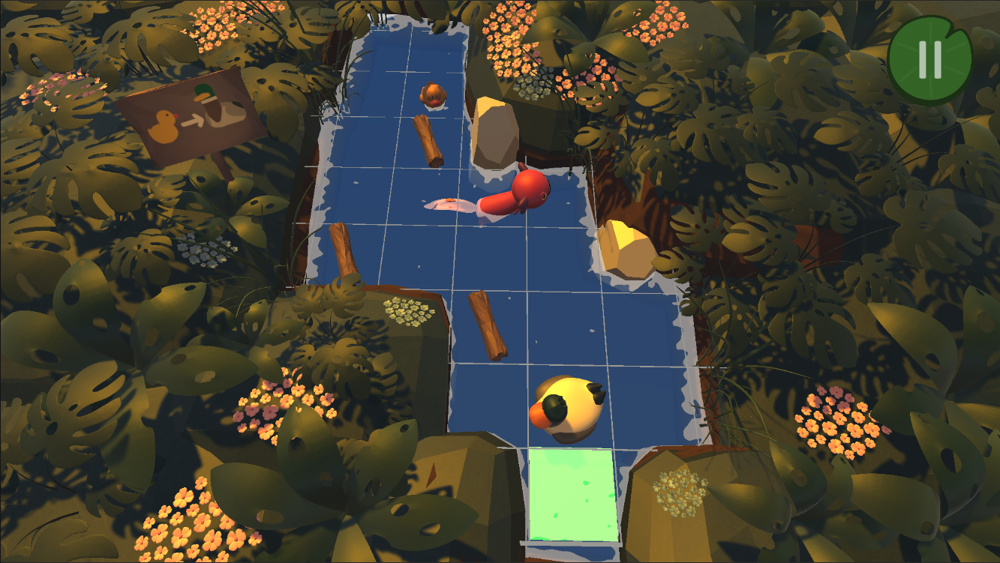
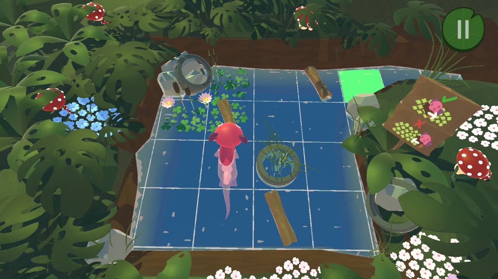
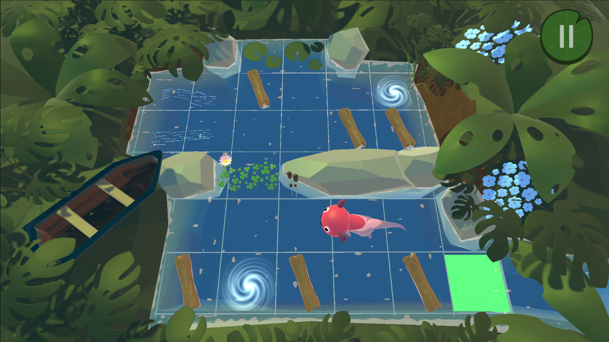
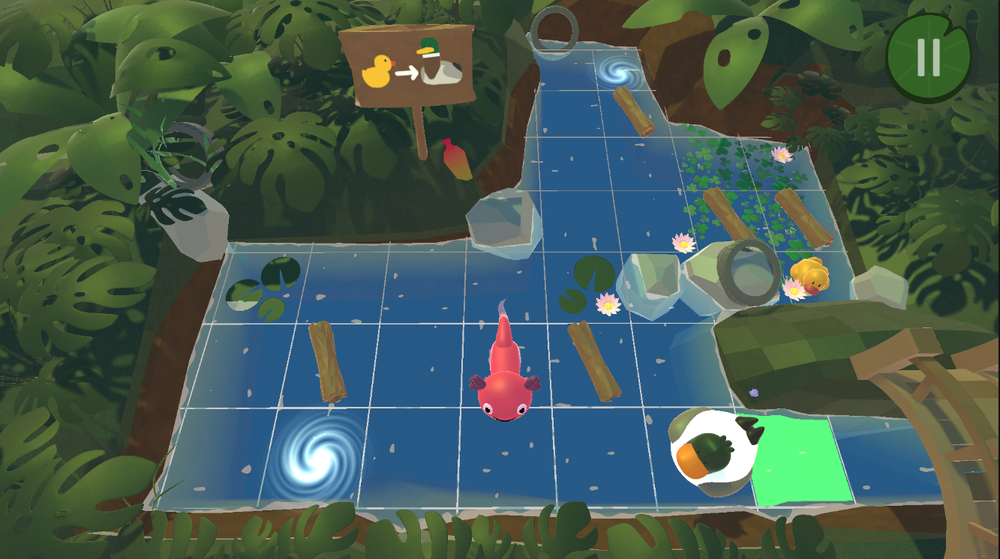

Upstream is a 3D single-player web video game that boosts computational thinking in children. The game has various levels throughout which the player will be able to observe the development and growth of Darwin, our protagonist. It is a puzzle-type game in which the player must move around the stage dodging and moving obstacles to reach a final goal, which represents the home of said amphibians.






Tapeo Games is a team consisting of six members, each playing a crucial role in the development process. Within this team, my role stands out as the specialist in inorganic modeling and environmental design, particularly focusing on creating detailed 3D models using Blender. Additionally, I took charge of crafting shaders within Unity, enhancing various visual elements such as water effects, grid patterns, and vortices.
You can play it here: UPSTREAM GOLDMASTER